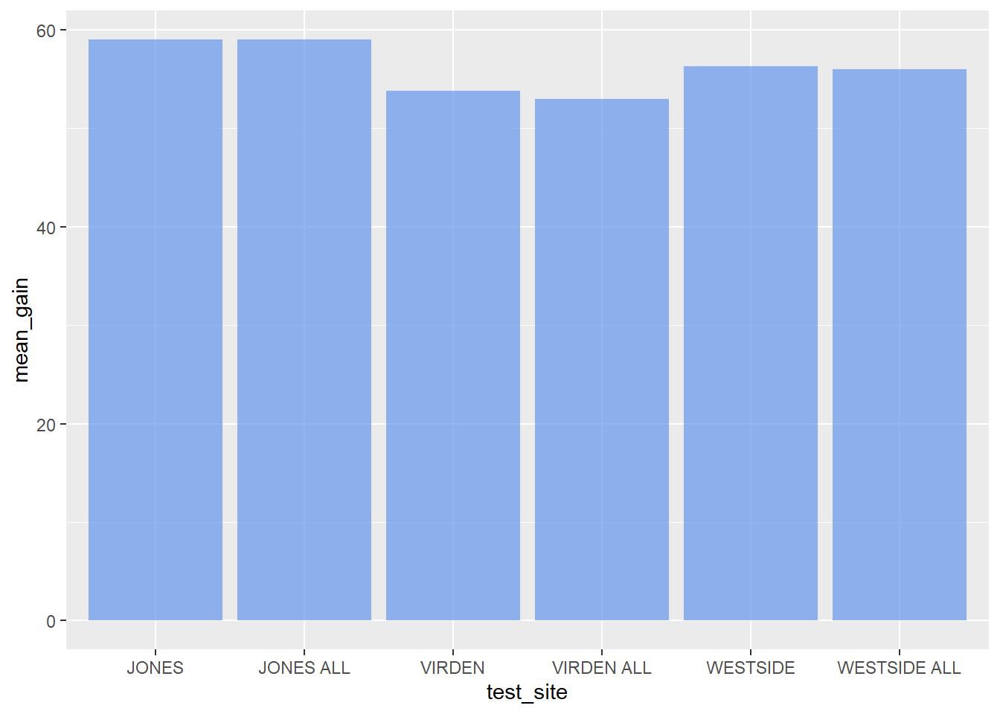
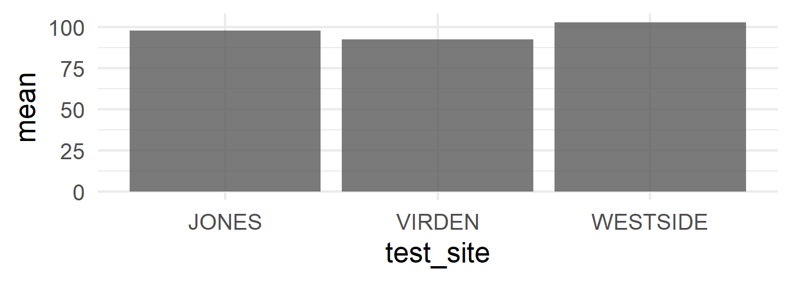

02:00
Week 4: Data Wrangling
{dplyr}
Housekeeping
- Assignment completion
- Midway Student Experience Survey
- now open
- Canvas: UO Course Surveys (left sidebar)
- .red[ Final Project Outline]
- Due 10/26
The outline should include a description of the data to be used, a discussion of what preparatory work will need to be done, and how the requirements of the final project will be met. The outline is intended to be low-stakes and is primarily designed to be a means for you to obtain feedback on the feasibility of the project and areas to consider.
Data Wrangling with {dplyr}
Week 4

Agenda
- Introduce common
{dplyr}functions- piping
{dplyr}functions - helper functions
- piping
- Introduce complimentary functions
ifelse()case_when()

Learning Objectives
- Understand basic data wrangling and transformations
select()filter()arrange()group_by()summarize()recode()&rename()
- Be able to pipe these functions to efficiently wrangle data

Providing grammar for:
- Graphics
{ggplot2}
- Data manipulations
{dplyr}{tidyr}
- Expanding area of specialized topics
{lubridate}{glue}{tidymodels}
- Many more…
Providing grammar for:
- Graphics
{ggplot2}
- Data manipulations
{dplyr}{tidyr}
- Expanding area of specialized topics
{lubridate}{glue}{tidymodels}
- Many more…
{dplyr}
{dplyr} 
A grammar for data wrangling (verbs!)
Take a couple minutes with your neighbor to guess what the following functions do: * select() * filter() * mutate() * arrange() * summarize() * group_by()
{dplyr}
A grammar for data wrangling (verbs!)
select() ::: {.fragment} : a subset of columns :::
filter()- a subset of rows
mutate()- add a new column or modify an existing column
arrange()- sort rows in ascending/descending order
summarize()- a new column created according to other columns
-
for example:
mean()orsd()+ often used with… group_by()- grouping column(s)
Arguments
{dplyr}always takes a data frame (tibble) as the first argument- just like
{ggplot}
- just like
subsequent functions tell
{dplyr}what to do with the data frameeach function applied returns the modified data frame
select()
select()
choose columns
select(df, a, c):::
-or-
:::  :::
:::
::::
Image from Software Carpentry
Examples
Let’s start with the presidential dataset from the {mdsr} package
library(tidyverse)
#install.packages("mdsr")
library(mdsr)
presidential# A tibble: 12 × 4
name start end party
<chr> <date> <date> <chr>
1 Eisenhower 1953-01-20 1961-01-20 Republican
2 Kennedy 1961-01-20 1963-11-22 Democratic
3 Johnson 1963-11-22 1969-01-20 Democratic
4 Nixon 1969-01-20 1974-08-09 Republican
5 Ford 1974-08-09 1977-01-20 Republican
6 Carter 1977-01-20 1981-01-20 Democratic
7 Reagan 1981-01-20 1989-01-20 Republican
8 Bush 1989-01-20 1993-01-20 Republican
9 Clinton 1993-01-20 2001-01-20 Democratic
10 Bush 2001-01-20 2009-01-20 Republican
11 Obama 2009-01-20 2017-01-20 Democratic
12 Trump 2017-01-20 2021-01-20 Republicanselect president name and party
select(presidential, name, party). . .
OR more typically
presidential %>%
select(name, party)# A tibble: 12 × 2
name party
<chr> <chr>
1 Eisenhower Republican
2 Kennedy Democratic
3 Johnson Democratic
4 Nixon Republican
5 Ford Republican
6 Carter Democratic
7 Reagan Republican
8 Bush Republican
9 Clinton Democratic
10 Bush Republican
11 Obama Democratic
12 Trump RepublicanNegation -
Don’t select variable(s)
presidential %>%
select(-start)# A tibble: 12 × 3
name end party
<chr> <date> <chr>
1 Eisenhower 1961-01-20 Republican
2 Kennedy 1963-11-22 Democratic
3 Johnson 1969-01-20 Democratic
4 Nixon 1974-08-09 Republican
5 Ford 1977-01-20 Republican
6 Carter 1981-01-20 Democratic
7 Reagan 1989-01-20 Republican
8 Bush 1993-01-20 Republican
9 Clinton 2001-01-20 Democratic
10 Bush 2009-01-20 Republican
11 Obama 2017-01-20 Democratic
12 Trump 2021-01-20 RepublicanNegation -
Don’t select variable(s)
presidential %>%
select(-start, -end)OR
presidential %>%
select(-c(start, end))# A tibble: 12 × 2
name party
<chr> <chr>
1 Eisenhower Republican
2 Kennedy Democratic
3 Johnson Democratic
4 Nixon Republican
5 Ford Republican
6 Carter Democratic
7 Reagan Republican
8 Bush Republican
9 Clinton Democratic
10 Bush Republican
11 Obama Democratic
12 Trump RepublicanIndexing
Less preferable because variable orders change
select(presidential, 1:3)OR more typically
presidential %>%
select(1:3)# A tibble: 12 × 3
name start end
<chr> <date> <date>
1 Eisenhower 1953-01-20 1961-01-20
2 Kennedy 1961-01-20 1963-11-22
3 Johnson 1963-11-22 1969-01-20
4 Nixon 1969-01-20 1974-08-09
5 Ford 1974-08-09 1977-01-20
6 Carter 1977-01-20 1981-01-20
7 Reagan 1981-01-20 1989-01-20
8 Bush 1989-01-20 1993-01-20
9 Clinton 1993-01-20 2001-01-20
10 Bush 2001-01-20 2009-01-20
11 Obama 2009-01-20 2017-01-20
12 Trump 2017-01-20 2021-01-20Use multiple methods
presidential %>%
select(name, 2, 4)# A tibble: 12 × 3
name start party
<chr> <date> <chr>
1 Eisenhower 1953-01-20 Republican
2 Kennedy 1961-01-20 Democratic
3 Johnson 1963-11-22 Democratic
4 Nixon 1969-01-20 Republican
5 Ford 1974-08-09 Republican
6 Carter 1977-01-20 Democratic
7 Reagan 1981-01-20 Republican
8 Bush 1989-01-20 Republican
9 Clinton 1993-01-20 Democratic
10 Bush 2001-01-20 Republican
11 Obama 2009-01-20 Democratic
12 Trump 2017-01-20 RepublicanUse select to order columns
library(fivethirtyeight)
college_grad_students# A tibble: 173 × 22
major_code major major_category grad_total grad_sample_size grad_employed
<int> <chr> <chr> <int> <int> <int>
1 5601 Construc… Industrial Ar… 9173 200 7098
2 6004 Commerci… Arts 53864 882 40492
3 6211 Hospital… Business 24417 437 18368
4 2201 Cosmetol… Industrial Ar… 5411 72 3590
5 2001 Communic… Computers & M… 9109 171 7512
6 3201 Court Re… Law & Public … 1542 22 1008
7 6206 Marketin… Business 190996 3738 151570
8 1101 Agricult… Agriculture &… 17488 386 13104
9 2101 Computer… Computers & M… 5611 98 4716
10 1904 Advertis… Communication… 33928 688 28517
# ℹ 163 more rows
# ℹ 16 more variables: grad_employed_fulltime_yearround <int>,
# grad_unemployed <int>, grad_unemployment_rate <dbl>, grad_p25th <dbl>,
# grad_median <dbl>, grad_p75th <int>, nongrad_total <int>,
# nongrad_employed <int>, nongrad_employed_fulltime_yearround <int>,
# nongrad_unemployed <int>, nongrad_unemployment_rate <dbl>,
# nongrad_p25th <dbl>, nongrad_median <dbl>, nongrad_p75th <dbl>, …select() helper functions
everything()starts_with()ends_with()contains()all_of()any_of()
Helper functions
First: this code may not work for you - why?
reads <- read_csv(here("data", "Project_Reads_Scores.csv")) %>%
clean_names()
reads# A tibble: 48 × 25
test_year test_type test_site student_id pre_test_score pre_test_percent
<chr> <chr> <chr> <chr> <dbl> <chr>
1 06/01/2016 12… YEAR END VIRDEN Virden 1 43 29%
2 06/01/2016 12… YEAR END VIRDEN Virden 2 46 31%
3 06/01/2016 12… YEAR END VIRDEN Virden 3 39 26%
4 06/01/2016 12… YEAR END VIRDEN Virden 4 35 23%
5 06/01/2016 12… YEAR END VIRDEN Virden 5 46 31%
6 06/01/2016 12… YEAR END VIRDEN Virden 6 35 23%
7 06/01/2016 12… YEAR END VIRDEN Virden 7 40 27%
8 06/01/2016 12… YEAR END VIRDEN Virden 8 39 26%
9 06/01/2016 12… YEAR END VIRDEN Virden 9 40 27%
10 06/01/2016 12… YEAR END VIRDEN Virden 10 45 30%
# ℹ 38 more rows
# ℹ 19 more variables: post_test_score <dbl>, post_test_percent <chr>,
# percentage_change <chr>, unit_1_score <dbl>, unit_1_percent <chr>,
# unit_2_score <dbl>, unit_2_percent <chr>, unit_3_score <dbl>,
# unit_3_percent <chr>, unit_4_score <dbl>, unit_4_percent <chr>,
# unit_5_6_score <dbl>, unit_5_6_percent <chr>, unit_7_score <dbl>,
# unit_7_percent <chr>, unit_8_score <dbl>, unit_8_percent <chr>, …Use select to order columns
college_grad_students %>%
select(major_code, grad_total, grad_sample_size, everything())# A tibble: 173 × 22
major_code grad_total grad_sample_size major major_category grad_employed
<int> <int> <int> <chr> <chr> <int>
1 5601 9173 200 Construc… Industrial Ar… 7098
2 6004 53864 882 Commerci… Arts 40492
3 6211 24417 437 Hospital… Business 18368
4 2201 5411 72 Cosmetol… Industrial Ar… 3590
5 2001 9109 171 Communic… Computers & M… 7512
6 3201 1542 22 Court Re… Law & Public … 1008
7 6206 190996 3738 Marketin… Business 151570
8 1101 17488 386 Agricult… Agriculture &… 13104
9 2101 5611 98 Computer… Computers & M… 4716
10 1904 33928 688 Advertis… Communication… 28517
# ℹ 163 more rows
# ℹ 16 more variables: grad_employed_fulltime_yearround <int>,
# grad_unemployed <int>, grad_unemployment_rate <dbl>, grad_p25th <dbl>,
# grad_median <dbl>, grad_p75th <int>, nongrad_total <int>,
# nongrad_employed <int>, nongrad_employed_fulltime_yearround <int>,
# nongrad_unemployed <int>, nongrad_unemployment_rate <dbl>,
# nongrad_p25th <dbl>, nongrad_median <dbl>, nongrad_p75th <dbl>, …everything() is a helper verb that includes all column names
starts_with()
reads %>%
select(starts_with("test"))# A tibble: 48 × 3
test_year test_type test_site
<chr> <chr> <chr>
1 06/01/2016 12:00:00 AM YEAR END VIRDEN
2 06/01/2016 12:00:00 AM YEAR END VIRDEN
3 06/01/2016 12:00:00 AM YEAR END VIRDEN
4 06/01/2016 12:00:00 AM YEAR END VIRDEN
5 06/01/2016 12:00:00 AM YEAR END VIRDEN
6 06/01/2016 12:00:00 AM YEAR END VIRDEN
7 06/01/2016 12:00:00 AM YEAR END VIRDEN
8 06/01/2016 12:00:00 AM YEAR END VIRDEN
9 06/01/2016 12:00:00 AM YEAR END VIRDEN
10 06/01/2016 12:00:00 AM YEAR END VIRDEN
# ℹ 38 more rowsends_with()
reads %>%
select(ends_with("score"))# A tibble: 48 × 10
pre_test_score post_test_score unit_1_score unit_2_score unit_3_score
<dbl> <dbl> <dbl> <dbl> <dbl>
1 43 92 3 4 6
2 46 104 5 5 6
3 39 75 4 4 6
4 35 115 4 4 6
5 46 85 2 5 6
6 35 91 5 5 7
7 40 96 5 5 6
8 39 74 4 5 5
9 40 90 6 4 5
10 45 86 4 5 5
# ℹ 38 more rows
# ℹ 5 more variables: unit_4_score <dbl>, unit_5_6_score <dbl>,
# unit_7_score <dbl>, unit_8_score <dbl>, total_score <dbl>contains()
reads %>%
select(contains("test"))# A tibble: 48 × 7
test_year test_type test_site pre_test_score pre_test_percent post_test_score
<chr> <chr> <chr> <dbl> <chr> <dbl>
1 06/01/20… YEAR END VIRDEN 43 29% 92
2 06/01/20… YEAR END VIRDEN 46 31% 104
3 06/01/20… YEAR END VIRDEN 39 26% 75
4 06/01/20… YEAR END VIRDEN 35 23% 115
5 06/01/20… YEAR END VIRDEN 46 31% 85
6 06/01/20… YEAR END VIRDEN 35 23% 91
7 06/01/20… YEAR END VIRDEN 40 27% 96
8 06/01/20… YEAR END VIRDEN 39 26% 74
9 06/01/20… YEAR END VIRDEN 40 27% 90
10 06/01/20… YEAR END VIRDEN 45 30% 86
# ℹ 38 more rows
# ℹ 1 more variable: post_test_percent <chr>all_of()
vars <- c("pre_test_score", "pre_test_percent", "post_test_score", "post_test_percent")reads %>%
select(all_of(vars))# A tibble: 48 × 4
pre_test_score pre_test_percent post_test_score post_test_percent
<dbl> <chr> <dbl> <chr>
1 43 29% 92 61%
2 46 31% 104 69%
3 39 26% 75 50%
4 35 23% 115 77%
5 46 31% 85 57%
6 35 23% 91 61%
7 40 27% 96 64%
8 39 26% 74 49%
9 40 27% 90 60%
10 45 30% 86 57%
# ℹ 38 more rowsall_of()
vars <- c("pre_test_score", "pre_test_percent", "post_test_score", "post_test_percent")mpg %>% #<<
select(all_of(vars))Error in `all_of()`:
! Can't subset columns that don't exist.
✖ Columns `pre_test_score`, `pre_test_percent`, `post_test_score`, and `post_test_percent` don't exist.any_of()
vars <- c("pre_test_score", "pre_test_percent", "post_test_score", "post_test_percent")reads %>%
select(any_of(vars))# A tibble: 48 × 4
pre_test_score pre_test_percent post_test_score post_test_percent
<dbl> <chr> <dbl> <chr>
1 43 29% 92 61%
2 46 31% 104 69%
3 39 26% 75 50%
4 35 23% 115 77%
5 46 31% 85 57%
6 35 23% 91 61%
7 40 27% 96 64%
8 39 26% 74 49%
9 40 27% 90 60%
10 45 30% 86 57%
# ℹ 38 more rowsany_of()
vars <- c("pre_test_score", "pre_test_percent", "post_test_score", "post_test_percent")mpg %>% #<<
select(any_of(vars))# A tibble: 234 × 0Mix select methods and helpers
You can mix types and helper functions
reads %>%
select(student_id, 1, starts_with("total"))# A tibble: 48 × 4
student_id test_year total_score total_percent_correct
<chr> <chr> <dbl> <chr>
1 Virden 1 06/01/2016 12:00:00 AM 207 41%
2 Virden 2 06/01/2016 12:00:00 AM 224 45%
3 Virden 3 06/01/2016 12:00:00 AM 193 39%
4 Virden 4 06/01/2016 12:00:00 AM 223 45%
5 Virden 5 06/01/2016 12:00:00 AM 198 40%
6 Virden 6 06/01/2016 12:00:00 AM 210 42%
7 Virden 7 06/01/2016 12:00:00 AM 211 42%
8 Virden 8 06/01/2016 12:00:00 AM 180 36%
9 Virden 9 06/01/2016 12:00:00 AM 206 41%
10 Virden 10 06/01/2016 12:00:00 AM 206 41%
# ℹ 38 more rowsMix select methods and helpers
You can also use select to rearrange your columns
reads %>%
select(student_id, 1, starts_with("total"), everything())# A tibble: 48 × 25
student_id test_year total_score total_percent_correct test_type test_site
<chr> <chr> <dbl> <chr> <chr> <chr>
1 Virden 1 06/01/2016 … 207 41% YEAR END VIRDEN
2 Virden 2 06/01/2016 … 224 45% YEAR END VIRDEN
3 Virden 3 06/01/2016 … 193 39% YEAR END VIRDEN
4 Virden 4 06/01/2016 … 223 45% YEAR END VIRDEN
5 Virden 5 06/01/2016 … 198 40% YEAR END VIRDEN
6 Virden 6 06/01/2016 … 210 42% YEAR END VIRDEN
7 Virden 7 06/01/2016 … 211 42% YEAR END VIRDEN
8 Virden 8 06/01/2016 … 180 36% YEAR END VIRDEN
9 Virden 9 06/01/2016 … 206 41% YEAR END VIRDEN
10 Virden 10 06/01/2016 … 206 41% YEAR END VIRDEN
# ℹ 38 more rows
# ℹ 19 more variables: pre_test_score <dbl>, pre_test_percent <chr>,
# post_test_score <dbl>, post_test_percent <chr>, percentage_change <chr>,
# unit_1_score <dbl>, unit_1_percent <chr>, unit_2_score <dbl>,
# unit_2_percent <chr>, unit_3_score <dbl>, unit_3_percent <chr>,
# unit_4_score <dbl>, unit_4_percent <chr>, unit_5_6_score <dbl>,
# unit_5_6_percent <chr>, unit_7_score <dbl>, unit_7_percent <chr>, …relocate()
relocate(.data, … before = NULL, .after = NULL)
.data = dataframe/tibble
… = columns to move
before = variable to move before
.after = variable to move after
- supplying neither before nor .after move columns to the left-hand side
- specifying both is an error
relocate()
presidential %>%
relocate(party)# A tibble: 12 × 4
party name start end
<chr> <chr> <date> <date>
1 Republican Eisenhower 1953-01-20 1961-01-20
2 Democratic Kennedy 1961-01-20 1963-11-22
3 Democratic Johnson 1963-11-22 1969-01-20
4 Republican Nixon 1969-01-20 1974-08-09
5 Republican Ford 1974-08-09 1977-01-20
6 Democratic Carter 1977-01-20 1981-01-20
7 Republican Reagan 1981-01-20 1989-01-20
8 Republican Bush 1989-01-20 1993-01-20
9 Democratic Clinton 1993-01-20 2001-01-20
10 Republican Bush 2001-01-20 2009-01-20
11 Democratic Obama 2009-01-20 2017-01-20
12 Republican Trump 2017-01-20 2021-01-20moves “party” to far left (default)
relocate()
presidential %>%
relocate(party, .after = start)# A tibble: 12 × 4
name start party end
<chr> <date> <chr> <date>
1 Eisenhower 1953-01-20 Republican 1961-01-20
2 Kennedy 1961-01-20 Democratic 1963-11-22
3 Johnson 1963-11-22 Democratic 1969-01-20
4 Nixon 1969-01-20 Republican 1974-08-09
5 Ford 1974-08-09 Republican 1977-01-20
6 Carter 1977-01-20 Democratic 1981-01-20
7 Reagan 1981-01-20 Republican 1989-01-20
8 Bush 1989-01-20 Republican 1993-01-20
9 Clinton 1993-01-20 Democratic 2001-01-20
10 Bush 2001-01-20 Republican 2009-01-20
11 Obama 2009-01-20 Democratic 2017-01-20
12 Trump 2017-01-20 Republican 2021-01-20moves “party” after “start”
relocate()
presidential %>%
relocate(end, .before = party)# A tibble: 12 × 4
name start end party
<chr> <date> <date> <chr>
1 Eisenhower 1953-01-20 1961-01-20 Republican
2 Kennedy 1961-01-20 1963-11-22 Democratic
3 Johnson 1963-11-22 1969-01-20 Democratic
4 Nixon 1969-01-20 1974-08-09 Republican
5 Ford 1974-08-09 1977-01-20 Republican
6 Carter 1977-01-20 1981-01-20 Democratic
7 Reagan 1981-01-20 1989-01-20 Republican
8 Bush 1989-01-20 1993-01-20 Republican
9 Clinton 1993-01-20 2001-01-20 Democratic
10 Bush 2001-01-20 2009-01-20 Republican
11 Obama 2009-01-20 2017-01-20 Democratic
12 Trump 2017-01-20 2021-01-20 Republicanmoves “end” before “party”
filter()
filter()
choose rows that satisfy your condition (== TRUE)
filter(df,
type == "otter",
site == "bay"):::
::: .pull-right[

:::
::::
Illustration by Allison Horst
filter()
Complete set of boolean operations - x is the left-hand circle - y is the right-hand circle - the shaded region show which parts each operator selects + xor == x or y except where they overlap
== - equal
! - negates
!= - NOT equal
& - and
| - or :::
:::

:::
::::
Image from Wickham & Grolemund (2017)
filter() numeric
- note the use of
==NOT=
mpg %>%
filter(cyl == 4)# A tibble: 81 × 11
manufacturer model displ year cyl trans drv cty hwy fl class
<chr> <chr> <dbl> <int> <int> <chr> <chr> <int> <int> <chr> <chr>
1 audi a4 1.8 1999 4 auto… f 18 29 p comp…
2 audi a4 1.8 1999 4 manu… f 21 29 p comp…
3 audi a4 2 2008 4 manu… f 20 31 p comp…
4 audi a4 2 2008 4 auto… f 21 30 p comp…
5 audi a4 quattro 1.8 1999 4 manu… 4 18 26 p comp…
6 audi a4 quattro 1.8 1999 4 auto… 4 16 25 p comp…
7 audi a4 quattro 2 2008 4 manu… 4 20 28 p comp…
8 audi a4 quattro 2 2008 4 auto… 4 19 27 p comp…
9 chevrolet malibu 2.4 1999 4 auto… f 19 27 r mids…
10 chevrolet malibu 2.4 2008 4 auto… f 22 30 r mids…
# ℹ 71 more rows:::
:::
mpg %>%
filter(hwy >= 22)# A tibble: 143 × 11
manufacturer model displ year cyl trans drv cty hwy fl class
<chr> <chr> <dbl> <int> <int> <chr> <chr> <int> <int> <chr> <chr>
1 audi a4 1.8 1999 4 auto… f 18 29 p comp…
2 audi a4 1.8 1999 4 manu… f 21 29 p comp…
3 audi a4 2 2008 4 manu… f 20 31 p comp…
4 audi a4 2 2008 4 auto… f 21 30 p comp…
5 audi a4 2.8 1999 6 auto… f 16 26 p comp…
6 audi a4 2.8 1999 6 manu… f 18 26 p comp…
7 audi a4 3.1 2008 6 auto… f 18 27 p comp…
8 audi a4 quattro 1.8 1999 4 manu… 4 18 26 p comp…
9 audi a4 quattro 1.8 1999 4 auto… 4 16 25 p comp…
10 audi a4 quattro 2 2008 4 manu… 4 20 28 p comp…
# ℹ 133 more rows:::
::::
filter for Democrats
- note the use of
==NOT=
presidential %>%
filter(party == "Democratic")# A tibble: 5 × 4
name start end party
<chr> <date> <date> <chr>
1 Kennedy 1961-01-20 1963-11-22 Democratic
2 Johnson 1963-11-22 1969-01-20 Democratic
3 Carter 1977-01-20 1981-01-20 Democratic
4 Clinton 1993-01-20 2001-01-20 Democratic
5 Obama 2009-01-20 2017-01-20 Democratic:::
:::
presidential %>%
filter(party = "Democratic")Error in `filter()`:
! We detected a named input.
ℹ This usually means that you've used `=` instead of `==`.
ℹ Did you mean `party == "Democratic"`?:::
::::
filter character
- note the use of
==NOT=
mpg_ %>%
filter(manufacturer == "pontiac")# A tibble: 5 × 5
manufacturer model displ year cyl
<chr> <chr> <dbl> <int> <int>
1 pontiac grand prix 3.1 1999 6
2 pontiac grand prix 3.8 1999 6
3 pontiac grand prix 3.8 1999 6
4 pontiac grand prix 3.8 2008 6
5 pontiac grand prix 5.3 2008 8:::
:::
presidential %>%
filter(party == "Democratic")# A tibble: 5 × 4
name start end party
<chr> <date> <date> <chr>
1 Kennedy 1961-01-20 1963-11-22 Democratic
2 Johnson 1963-11-22 1969-01-20 Democratic
3 Carter 1977-01-20 1981-01-20 Democratic
4 Clinton 1993-01-20 2001-01-20 Democratic
5 Obama 2009-01-20 2017-01-20 Democratic:::
::::
Democrats starting after 2000
, is equivalent to &
presidential %>%
filter(party == "Democratic" &
start > "2000-01-01")# A tibble: 1 × 4
name start end party
<chr> <date> <date> <chr>
1 Obama 2009-01-20 2017-01-20 Democratic:::
:::
presidential %>%
filter(party == "Democratic",
start > "2000-01-01")# A tibble: 1 × 4
name start end party
<chr> <date> <date> <chr>
1 Obama 2009-01-20 2017-01-20 Democratic:::
::::
filter() note
- The order of operations doesn’t work like English
- Can’t write:
filter(presidential, name == "Kennedy" | "Johnson")
- Must be:
filter(presidential, name == "Kennedy" | name == "Johnson")
more filter()
reads# A tibble: 48 × 25
test_year test_type test_site student_id pre_test_score pre_test_percent
<chr> <chr> <chr> <chr> <dbl> <chr>
1 06/01/2016 12… YEAR END VIRDEN Virden 1 43 29%
2 06/01/2016 12… YEAR END VIRDEN Virden 2 46 31%
3 06/01/2016 12… YEAR END VIRDEN Virden 3 39 26%
4 06/01/2016 12… YEAR END VIRDEN Virden 4 35 23%
5 06/01/2016 12… YEAR END VIRDEN Virden 5 46 31%
6 06/01/2016 12… YEAR END VIRDEN Virden 6 35 23%
7 06/01/2016 12… YEAR END VIRDEN Virden 7 40 27%
8 06/01/2016 12… YEAR END VIRDEN Virden 8 39 26%
9 06/01/2016 12… YEAR END VIRDEN Virden 9 40 27%
10 06/01/2016 12… YEAR END VIRDEN Virden 10 45 30%
# ℹ 38 more rows
# ℹ 19 more variables: post_test_score <dbl>, post_test_percent <chr>,
# percentage_change <chr>, unit_1_score <dbl>, unit_1_percent <chr>,
# unit_2_score <dbl>, unit_2_percent <chr>, unit_3_score <dbl>,
# unit_3_percent <chr>, unit_4_score <dbl>, unit_4_percent <chr>,
# unit_5_6_score <dbl>, unit_5_6_percent <chr>, unit_7_score <dbl>,
# unit_7_percent <chr>, unit_8_score <dbl>, unit_8_percent <chr>, …more filter()
Anomaly in the data
reads %>%
count(student_id)# A tibble: 46 × 2
student_id n
<chr> <int>
1 All Students (Average) 3
2 Jones 1 1
3 Jones 10 1
4 Jones 11 1
5 Jones 12 1
6 Jones 13 1
7 Jones 14 1
8 Jones 15 1
9 Jones 2 1
10 Jones 3 1
# ℹ 36 more rowsLet’s remove these aggregate rows
students_only <- reads %>%
filter(student_id != "All Students (Average)")
students_only %>%
count(student_id)# A tibble: 45 × 2
student_id n
<chr> <int>
1 Jones 1 1
2 Jones 10 1
3 Jones 11 1
4 Jones 12 1
5 Jones 13 1
6 Jones 14 1
7 Jones 15 1
8 Jones 2 1
9 Jones 3 1
10 Jones 4 1
# ℹ 35 more rowsNot equal
! means NOT
!= means NOT equal
Note:
- If you want values that are NOT
NA:!is.na(variable)variable != NA
Chaining {dplyr} functions
What if we wanted to select and filter a data set?
Select “name” and “party” of presidents who began their term after 2000
- Two step method
after_2000 <- filter(presidential, start > as.Date("2000-01-01"))
select(after_2000, name, party)# A tibble: 3 × 2
name party
<chr> <chr>
1 Bush Republican
2 Obama Democratic
3 Trump RepublicanChaining {dplyr} functions
- Alternatively, we could wrap
selectaroundfilter
select(filter(presidential, start > as.Date("2000-01-01")), name, party)# A tibble: 3 × 2
name party
<chr> <chr>
1 Bush Republican
2 Obama Democratic
3 Trump RepublicanChaining {dplyr} functions
- Piping functions 🎉
We could use the pipe function to help increase the readability of our code:
%>%Called the “pipe” operator and “piping functions”
filter(presidential, start > as.Date("2000-01-01")) %>%
select(name, party)# A tibble: 3 × 2
name party
<chr> <chr>
1 Bush Republican
2 Obama Democratic
3 Trump RepublicanPiping functions
Even better:
- Generally when using the pipe, the first argument is the data set, which gets piped through the corresponding functions
- So the code on the prior slide would be:
presidential %>%
filter(start > as.Date("2000-01-01")) %>%
select(name, party)# A tibble: 3 × 2
name party
<chr> <chr>
1 Bush Republican
2 Obama Democratic
3 Trump RepublicanNote the lovely indentations and line breaks to help keep things straight
mutate()
Some new data
(prepost <- reads %>%
select(student_id, test_site, pre_test_score, post_test_score))# A tibble: 48 × 4
student_id test_site pre_test_score post_test_score
<chr> <chr> <dbl> <dbl>
1 Virden 1 VIRDEN 43 92
2 Virden 2 VIRDEN 46 104
3 Virden 3 VIRDEN 39 75
4 Virden 4 VIRDEN 35 115
5 Virden 5 VIRDEN 46 85
6 Virden 6 VIRDEN 35 91
7 Virden 7 VIRDEN 40 96
8 Virden 8 VIRDEN 39 74
9 Virden 9 VIRDEN 40 90
10 Virden 10 VIRDEN 45 86
# ℹ 38 more rowsmutate()
Add a variable
# A tibble: 48 × 5
student_id test_site pre_test_score post_test_score gain
<chr> <chr> <dbl> <dbl> <dbl>
1 Virden 1 VIRDEN 43 92 49
2 Virden 2 VIRDEN 46 104 58
3 Virden 3 VIRDEN 39 75 36
4 Virden 4 VIRDEN 35 115 80
5 Virden 5 VIRDEN 46 85 39
6 Virden 6 VIRDEN 35 91 56
7 Virden 7 VIRDEN 40 96 56
8 Virden 8 VIRDEN 39 74 35
9 Virden 9 VIRDEN 40 90 50
10 Virden 10 VIRDEN 45 86 41
# ℹ 38 more rowsnames(prepost)[1] "student_id" "test_site" "pre_test_score" "post_test_score". . .
Why do we not see the new gain column?
mutate()
Add multiple variables
prepost <- prepost %>%
mutate(
gain = post_test_score - pre_test_score,
sum_tests = post_test_score + pre_test_score
)
prepost# A tibble: 48 × 6
student_id test_site pre_test_score post_test_score gain sum_tests
<chr> <chr> <dbl> <dbl> <dbl> <dbl>
1 Virden 1 VIRDEN 43 92 49 135
2 Virden 2 VIRDEN 46 104 58 150
3 Virden 3 VIRDEN 39 75 36 114
4 Virden 4 VIRDEN 35 115 80 150
5 Virden 5 VIRDEN 46 85 39 131
6 Virden 6 VIRDEN 35 91 56 126
7 Virden 7 VIRDEN 40 96 56 136
8 Virden 8 VIRDEN 39 74 35 113
9 Virden 9 VIRDEN 40 90 50 130
10 Virden 10 VIRDEN 45 86 41 131
# ℹ 38 more rowsmutate()
Change a variable
prepost <- prepost %>%
mutate(sum_tests = (sum_tests/180) * 100)
prepost# A tibble: 48 × 6
student_id test_site pre_test_score post_test_score gain sum_tests
<chr> <chr> <dbl> <dbl> <dbl> <dbl>
1 Virden 1 VIRDEN 43 92 49 75
2 Virden 2 VIRDEN 46 104 58 83.3
3 Virden 3 VIRDEN 39 75 36 63.3
4 Virden 4 VIRDEN 35 115 80 83.3
5 Virden 5 VIRDEN 46 85 39 72.8
6 Virden 6 VIRDEN 35 91 56 70
7 Virden 7 VIRDEN 40 96 56 75.6
8 Virden 8 VIRDEN 39 74 35 62.8
9 Virden 9 VIRDEN 40 90 50 72.2
10 Virden 10 VIRDEN 45 86 41 72.8
# ℹ 38 more rowsarrange()
arrange()
Order the data
- Order by gain, ascending [default]
prepost %>%
arrange(gain)# A tibble: 48 × 6
student_id test_site pre_test_score post_test_score gain sum_tests
<chr> <chr> <dbl> <dbl> <dbl> <dbl>
1 Jones 12 JONES 27 32 5 32.8
2 Westside 6 WESTSIDE 57 82 25 77.2
3 Virden 8 VIRDEN 39 74 35 62.8
4 Virden 3 VIRDEN 39 75 36 63.3
5 Virden 5 VIRDEN 46 85 39 72.8
6 Virden 10 VIRDEN 45 86 41 72.8
7 Jones 3 JONES 54 95 41 82.8
8 Virden 1 VIRDEN 43 92 49 75
9 Jones 13 JONES 49 98 49 81.7
10 Westside 13 WESTSIDE 45 94 49 77.2
# ℹ 38 more rowsarrange()
Order the data
- Order by pre_test_score and gain, ascending
prepost %>%
arrange(pre_test_score, gain)# A tibble: 48 × 6
student_id test_site pre_test_score post_test_score gain sum_tests
<chr> <chr> <dbl> <dbl> <dbl> <dbl>
1 Jones 11 JONES 24 108 84 73.3
2 Jones 4 JONES 25 99 74 68.9
3 Jones 12 JONES 27 32 5 32.8
4 Virden 12 VIRDEN 31 102 71 73.9
5 Virden 11 VIRDEN 32 91 59 68.3
6 Virden 13 VIRDEN 33 86 53 66.1
7 Virden 6 VIRDEN 35 91 56 70
8 Virden 15 VIRDEN 35 101 66 75.6
9 Jones 9 JONES 35 109 74 80
10 Virden 4 VIRDEN 35 115 80 83.3
# ℹ 38 more rowsarrange()
Order the data
- Order by gain,
descending
prepost %>%
arrange(desc(gain))# A tibble: 48 × 6
student_id test_site pre_test_score post_test_score gain sum_tests
<chr> <chr> <dbl> <dbl> <dbl> <dbl>
1 Jones 11 JONES 24 108 84 73.3
2 Virden 4 VIRDEN 35 115 80 83.3
3 Jones 4 JONES 25 99 74 68.9
4 Jones 5 JONES 36 110 74 81.1
5 Jones 9 JONES 35 109 74 80
6 Virden 12 VIRDEN 31 102 71 73.9
7 Jones 1 JONES 36 103 67 77.2
8 Virden 15 VIRDEN 35 101 66 75.6
9 Jones 6 JONES 40 106 66 81.1
10 Westside 8 WESTSIDE 43 109 66 84.4
# ℹ 38 more rowssummarize()
summarize()
or summarise()
- Here: compute the
meanandstandard deviationof the gain scores - What are we looking at?
prepost %>%
summarize(mean_gain = mean(gain, na.rm = TRUE),
sd_gain = sd(gain, na.rm = TRUE))# A tibble: 1 × 2
mean_gain sd_gain
<dbl> <dbl>
1 56.3 13.6::: {aside .fragment} This is a good start for a descriptive table! :::
group_by()

:::

::::
Image from Software Carpentry
group_by()
Conduct an operation for each level of a grouping factor
Here, compute the mean gain for each test site
prepost %>%
group_by(test_site) %>%
summarize(mean_gain = mean(gain))# A tibble: 6 × 2
test_site mean_gain
<chr> <dbl>
1 JONES 59
2 JONES ALL 59
3 VIRDEN 53.8
4 VIRDEN ALL 53
5 WESTSIDE 56.3
6 WESTSIDE ALL 56 group_by()
When you use group_by() and summarize()
You will get a row for each unique group
mpg %>%
group_by(cyl) %>%
summarize(max_hwy = max(hwy))# A tibble: 4 × 2
cyl max_hwy
<int> <int>
1 4 44
2 5 29
3 6 29
4 8 26:::
If you have multiple grouping variables, you will get a row for each unique combination of groups
mpg %>%
group_by(cyl, drv) %>%
summarize(max_hwy = max(hwy))# A tibble: 9 × 3
# Groups: cyl [4]
cyl drv max_hwy
<int> <chr> <int>
1 4 4 28
2 4 f 44
3 5 f 29
4 6 4 25
5 6 f 29
6 6 r 26
7 8 4 23
8 8 f 25
9 8 r 26::::
Add summarized column to full data
Use mutate()!
prepost %>%
group_by(test_site) %>%
mutate(mean_gain = mean(gain))# A tibble: 48 × 7
# Groups: test_site [6]
student_id test_site pre_test_score post_test_score gain sum_tests mean_gain
<chr> <chr> <dbl> <dbl> <dbl> <dbl> <dbl>
1 Virden 1 VIRDEN 43 92 49 75 53.8
2 Virden 2 VIRDEN 46 104 58 83.3 53.8
3 Virden 3 VIRDEN 39 75 36 63.3 53.8
4 Virden 4 VIRDEN 35 115 80 83.3 53.8
5 Virden 5 VIRDEN 46 85 39 72.8 53.8
6 Virden 6 VIRDEN 35 91 56 70 53.8
7 Virden 7 VIRDEN 40 96 56 75.6 53.8
8 Virden 8 VIRDEN 39 74 35 62.8 53.8
9 Virden 9 VIRDEN 40 90 50 72.2 53.8
10 Virden 10 VIRDEN 45 86 41 72.8 53.8
# ℹ 38 more rowsRetain only summarized columns
Use summarize()!
prepost %>%
group_by(test_site) %>%
summarize(mean_gain = mean(gain))# A tibble: 6 × 2
test_site mean_gain
<chr> <dbl>
1 JONES 59
2 JONES ALL 59
3 VIRDEN 53.8
4 VIRDEN ALL 53
5 WESTSIDE 56.3
6 WESTSIDE ALL 56 Pipe to {ggplot}!
prepost %>%
group_by(test_site) %>%
summarize(mean_gain = mean(gain)) %>%
ggplot(aes(test_site, mean_gain)) + #<<
geom_col(fill = "cornflowerblue", alpha = .7) #<<
Summarizing and Plotting
- Calculate mean post_test_score by test site
students_only %>%
group_by(test_site) %>%
summarize(mean = mean(post_test_score))# A tibble: 3 × 2
test_site mean
<chr> <dbl>
1 JONES 97.8
2 VIRDEN 92.5
3 WESTSIDE 103. Plot it
theme_set(theme_minimal(base_size = 18))
students_only %>%
group_by(test_site) %>%
summarize(mean = mean(post_test_score)) %>%
ggplot(aes(test_site, mean)) +
geom_col(alpha = 0.8)
A couple more
recode() and rename()
Recode with ifelse()
Recoding into dichotomous variable with ifelse()
ifelse(test, yes, no)
or
ifelse(logical statement, Do this if TRUE, else do this)
Recode with ifelse()
Recoding into dichotomous variable with ifelse()
Remember to pair with mutate()!
students_only %>%
mutate(test_site = ifelse(test_site == "JONES", "district 1", "district 2"))# A tibble: 45 × 25
test_year test_type test_site student_id pre_test_score pre_test_percent
<chr> <chr> <chr> <chr> <dbl> <chr>
1 06/01/2016 12… YEAR END district… Virden 1 43 29%
2 06/01/2016 12… YEAR END district… Virden 2 46 31%
3 06/01/2016 12… YEAR END district… Virden 3 39 26%
4 06/01/2016 12… YEAR END district… Virden 4 35 23%
5 06/01/2016 12… YEAR END district… Virden 5 46 31%
6 06/01/2016 12… YEAR END district… Virden 6 35 23%
7 06/01/2016 12… YEAR END district… Virden 7 40 27%
8 06/01/2016 12… YEAR END district… Virden 8 39 26%
9 06/01/2016 12… YEAR END district… Virden 9 40 27%
10 06/01/2016 12… YEAR END district… Virden 10 45 30%
# ℹ 35 more rows
# ℹ 19 more variables: post_test_score <dbl>, post_test_percent <chr>,
# percentage_change <chr>, unit_1_score <dbl>, unit_1_percent <chr>,
# unit_2_score <dbl>, unit_2_percent <chr>, unit_3_score <dbl>,
# unit_3_percent <chr>, unit_4_score <dbl>, unit_4_percent <chr>,
# unit_5_6_score <dbl>, unit_5_6_percent <chr>, unit_7_score <dbl>,
# unit_7_percent <chr>, unit_8_score <dbl>, unit_8_percent <chr>, …Recode with recode()
Recoding into multinomial variable
recode(variable,
old_category_1 = "new_category_1",
old_category_2 = "new_category_2",
old_category_3 = "new_category_3",
...
)Recode with recode()
Recoding into multinomial variable
Remember to pair with mutate()
students_only %>%
mutate(test_site = recode(test_site,
JONES = "Jones Middle",
VIRDEN = "Virden Elementary",
WESTSIDE = "Westside High")
)# A tibble: 45 × 25
test_year test_type test_site student_id pre_test_score pre_test_percent
<chr> <chr> <chr> <chr> <dbl> <chr>
1 06/01/2016 12… YEAR END Virden E… Virden 1 43 29%
2 06/01/2016 12… YEAR END Virden E… Virden 2 46 31%
3 06/01/2016 12… YEAR END Virden E… Virden 3 39 26%
4 06/01/2016 12… YEAR END Virden E… Virden 4 35 23%
5 06/01/2016 12… YEAR END Virden E… Virden 5 46 31%
6 06/01/2016 12… YEAR END Virden E… Virden 6 35 23%
7 06/01/2016 12… YEAR END Virden E… Virden 7 40 27%
8 06/01/2016 12… YEAR END Virden E… Virden 8 39 26%
9 06/01/2016 12… YEAR END Virden E… Virden 9 40 27%
10 06/01/2016 12… YEAR END Virden E… Virden 10 45 30%
# ℹ 35 more rows
# ℹ 19 more variables: post_test_score <dbl>, post_test_percent <chr>,
# percentage_change <chr>, unit_1_score <dbl>, unit_1_percent <chr>,
# unit_2_score <dbl>, unit_2_percent <chr>, unit_3_score <dbl>,
# unit_3_percent <chr>, unit_4_score <dbl>, unit_4_percent <chr>,
# unit_5_6_score <dbl>, unit_5_6_percent <chr>, unit_7_score <dbl>,
# unit_7_percent <chr>, unit_8_score <dbl>, unit_8_percent <chr>, …Recode with recode()
Remember to use backticks for special characters
mtcars %>%
mutate(cyl_str = recode(cyl,
`4` = "cylinders4",
`6` = "cylinders6",
`8` = "cylinders8"))Recode with case_when()
Recoding across several variables, or if you find yourself using nested ifelse() statements
Remember to pair with mutate()
library(palmerpenguins)penguins %>%
mutate(species_big =
case_when(
body_mass_g > 4500 & species == "Adelie" ~ "adelie_big",
body_mass_g > 4600 & species == "Chinstrap" ~ "chinstrap_big",
body_mass_g > 6000 & species == "Gentoo" ~ "gentoo_big",
.default ~ "other"
)). . .
.default equivalent to all else
rename()
rename(new_name = old_name)
penguins %>%
rename(
home = island,
bill_length = bill_length_mm
)# A tibble: 344 × 8
species home bill_length bill_depth_mm flipper_length_mm body_mass_g sex
<fct> <fct> <dbl> <dbl> <int> <int> <fct>
1 Adelie Torger… 39.1 18.7 181 3750 male
2 Adelie Torger… 39.5 17.4 186 3800 fema…
3 Adelie Torger… 40.3 18 195 3250 fema…
4 Adelie Torger… NA NA NA NA <NA>
5 Adelie Torger… 36.7 19.3 193 3450 fema…
6 Adelie Torger… 39.3 20.6 190 3650 male
7 Adelie Torger… 38.9 17.8 181 3625 fema…
8 Adelie Torger… 39.2 19.6 195 4675 male
9 Adelie Torger… 34.1 18.1 193 3475 <NA>
10 Adelie Torger… 42 20.2 190 4250 <NA>
# ℹ 334 more rows
# ℹ 1 more variable: year <int>. . .
NOT paired with mutate()
rename with select()
penguins %>%
select(species, home = island, bill_length = bill_length_mm, year) #<<# A tibble: 344 × 4
species home bill_length year
<fct> <fct> <dbl> <int>
1 Adelie Torgersen 39.1 2007
2 Adelie Torgersen 39.5 2007
3 Adelie Torgersen 40.3 2007
4 Adelie Torgersen NA 2007
5 Adelie Torgersen 36.7 2007
6 Adelie Torgersen 39.3 2007
7 Adelie Torgersen 38.9 2007
8 Adelie Torgersen 39.2 2007
9 Adelie Torgersen 34.1 2007
10 Adelie Torgersen 42 2007
# ℹ 334 more rowsFinal notes on {dplyr}
- We could spend weeks on this
- We’ll be using it all term long
- Verbs can help you gain fluency
- There are also conditional and all-inclusive versions of
mutate,select, andsummarize
Next time
Before next class
- Final Project
- Final Project: Outline
- Reading
- Supplemental Learning
- Homework
- Homework 2
- Homework 3